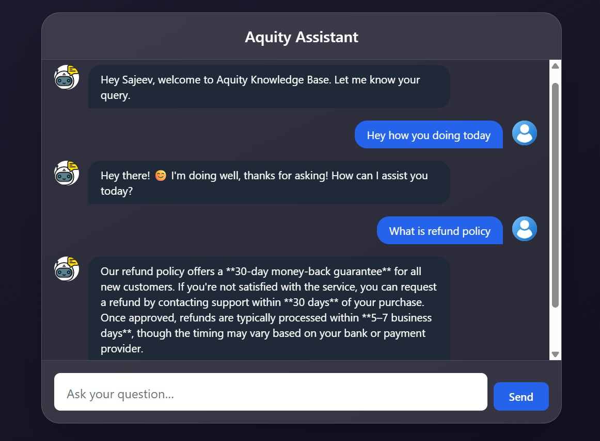

AI Knowledge Base Agent

Project Objective
Deliver a conversational assistant that can instantly reference company
documents (FAQs, SOPs, policy PDFs, etc.) and provide accurate answers
for both customers and internal support teams.
Tech Stack Used
- Frontend: React + Vite, Tailwind / Chakra UI
- Backend: FastAPI (Python)
- Embeddings: BAAI bge-base-en-v1.5
- Vector DB: Qdrant (local or cloud)
- LLM: DeepSeek Chat v3-0324 via OpenRouter
Key Capabilities
- Dual-mode UI (Customer vs Internal) with personalized greetings
- Retrieval-Augmented Generation pipeline for grounded answers
- Typing preview and smooth chat animations
- Graceful fallback for out-of-scope queries
Future Scope
- Voice input (speech-to-text) integration
- Admin dashboard for document upload & usage analytics
- Live escalation workflow to ticketing systems (Zendesk/Jira)
- Multi-language document support
View Code on GitHub